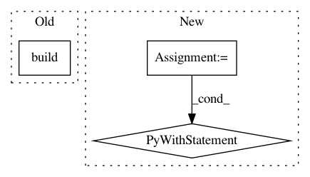

4682eeff2fcd01e7c56684e3d2b9e5f8ef37b26f,compiler/quilt/test/test_import.py,ImportTest,test_multiple_package_dirs,#ImportTest#,168
Before Change
// First level
mydir = os.path.dirname(__file__)
build_path = os.path.join(mydir, "./build_simple.yml")
command.build("foo/nested", build_path)
// Second level: different package
os.mkdir("aaa")
os.chdir("aaa")
After Change
command.build("foo/multiple1", build_path)
// First and second package in the new build dir.
with patch.dict(os.environ, {"QUILT_PRIMARY_PACKAGE_DIR": new_build_dir}):
command.build("foo/multiple1", simple_build_path)
command.build("foo/multiple2", simple_build_path)
// Cannot see the second package yet.
with self.assertRaises(ImportError):
from quilt.data.foo import multiple2
// Now search the new build dir.
In pattern: SUPERPATTERN
Frequency: 3
Non-data size: 3
Instances
Project Name: quiltdata/quilt
Commit Name: 4682eeff2fcd01e7c56684e3d2b9e5f8ef37b26f
Time: 2018-01-17
Author: dima@gmail.com
File Name: compiler/quilt/test/test_import.py
Class Name: ImportTest
Method Name: test_multiple_package_dirs
Project Name: keras-team/autokeras
Commit Name: 13aa31bc1a0b87d6c4b5e787c9b041ec83831c34
Time: 2020-07-31
Author: jin@tamu.edu
File Name: autokeras/blocks/reduction.py
Class Name: SpatialReduction
Method Name: build